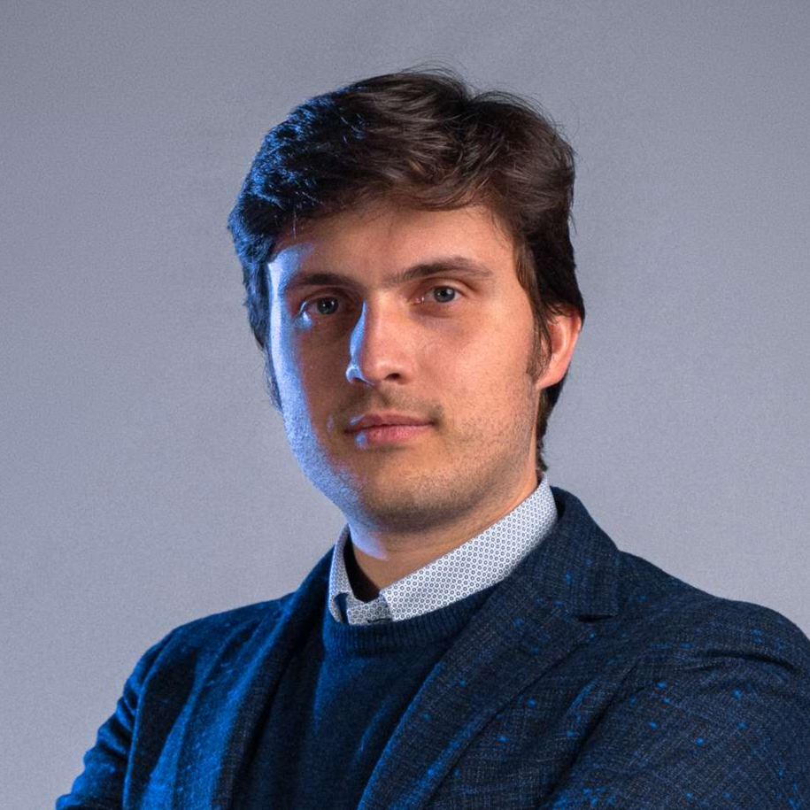
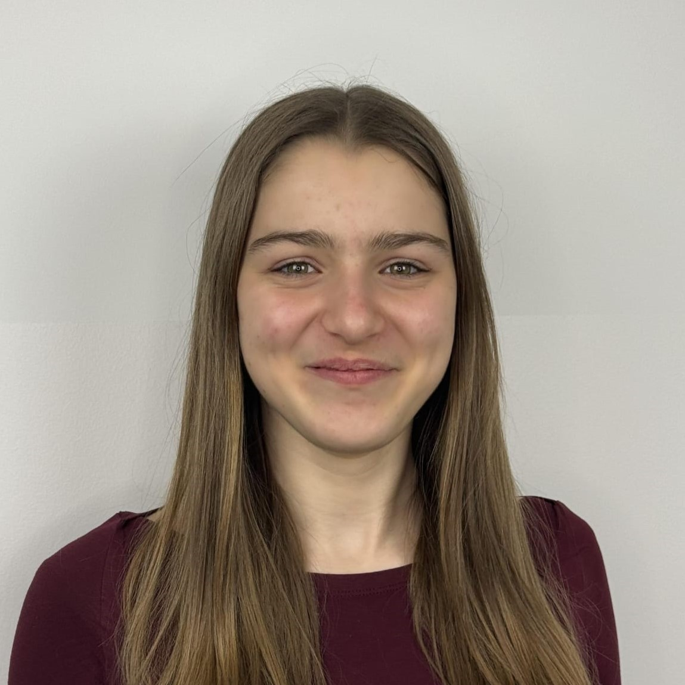
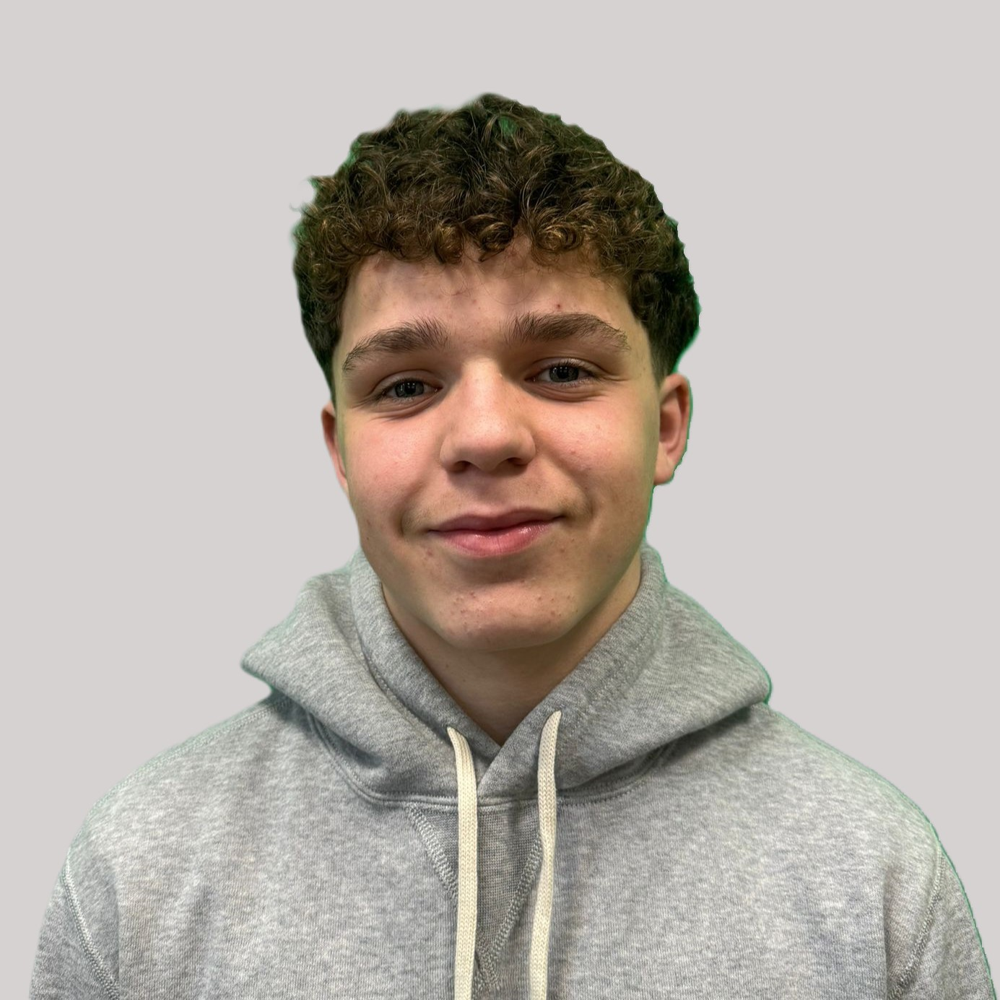

Giovanni Bellorio
Docente
Giovanni Bellorio è il professore di informatica presso la scuola "Alle Stimate" di Verona. Oltre ad essere un docente di talento, ricopre il ruolo di leader nel team R32 di robotica della scuola. Grazie alla sua guida competente e alla sua dedizione, i membri del team sono ispirati a lavorare con impegno e determinazione. La sua passione per l'informatica e la sua conoscenza approfondita del settore sono fonte di ispirazione per tutti coloro che partecipano al team, contribuendo al successo e alla crescita delle competenze di ciascun membro. La sua capacità di motivare gli studenti e di creare un ambiente collaborativo favorisce lo sviluppo di progetti innovativi e ambiziosi, portando il team a raggiungere risultati straordinari nel campo della robotica.
Marco Tomazzoli
Team coding

Marco Tomazzoli è uno studente della seconda Scienze Applicate presso la scuola "Alle Stimate". Le sue più grandi passioni sono la pallavolo, i videogames ma soprattutto la robotica, motivo per il quale ha deciso di aderire al progetto, dove programma il NAO e si occuppa della creazione della DocumentCar.
Nicola Faldi
Team coding

Nicola Faldi è uno studente della seconda Scienze Applicate presso la scuola "Alle Stimate". È molto bravo a suonare la chitarra elettrica. La sua più grande passione è la robotica, motivo per il quale è entrato nel team, dove programma il NAO e si occuppa della creazione della DocumentCar.
Mattia Begali
Team coding

Mattia Begali è uno studente della terza Scienze Applicate presso la scuola "Alle Stimate". Una delle sue passioni è la robotica e lo studio e nel tempo libero suona la chitarra e ascolta musica. Nel team R32 si occupa della programmazione del NAO e della creazione della DocumentCar.
Haseeb Nabi
Team coding

Haseeb Nabi è uno studente della seconda Scienze Applicate presso la scuola "Alle Stimate". Le sue passioni sono il la programmazione e il calcio. Nel tempo libero gioca a calcio con gli amici. Nel team R32, si occupa della programmazione del NAO e della creazione della DocumentCar
Anna Carli
Team social
Anna Carli frequenta la seconda scienze applicate presso la scuola "Alle Stimate" di Verona. Le suo passioni sono la musica e la danza. Nel tempo libero pratica danza. Le è sempre interessato il mondo della robotica ed è per questo che ha partecipato al progetto. Nel team R32 si occupa della creazione del sito web e dell'organizzazione dei social media.
Simone Fiorin
Team social
Simone Fiorin è uno studente della seconda Scienze Applicate presso la scuola "Alle Stimate". Le sue passioni sono il pianoforte e l’informatica . Nel tempo libero ama giococare a calcio nonché è il suo sport. Nel team R32, il suo ruolo è quello di occuparsi della creazione del sito web e l’organizzazione dei social media.
Davide Prandini
Team social

Davide Prandini è uno studente della terza Scienze Applicate presso la scuola "Alle Stimate". ldurante il suo tempo libero gioca a calcio. questo sport è la sua più grande passione, infatti gioca anche in una squadra. Un'altra sua più grande passione è la Robotica. Nel team R32 si occupa di tutto quello che riguarda i social media.
Luca Mormile
Team social

Luca Mormile è uno studente della seconda Scienze Applicate presso la scuola "Alle Stimate". Le sue passioni ruotano attorno all'innovazione e all'informatica del futuro, nel tempo libero ascolta musica e esce con gli amici. Nel team R32, il suo ruolo è quello di occuparsi della creazione del sito web e l'organizzazione dei social media.
Chiara Giacomelli
Team social

Chiara Giacomelli è una studentessa della quarta scienze applicate alla scuola "Alle Stimate" di Verona. Le sue passioni sono la scienza e la grafica, nel tempo libero si dedica alla danza e al disegno. Le piace molto la robotica e nel team collabora alla gestione dei social
Paolo Spinalbelli
Team video

Paolo Spinalbelli è uno studente della seconda Scienze Applicate presso la scuola "Alle Stimate". Le sue passioni sono il basket e l'informatica, ha sempre la battuta pronta e gli piace molto stare con gli amici. Nel team R32, il suo compito è quello di girare i video e foto.
Alessandro Albertini
Team video

Alessandro Albertini, frequenta la seconda scienze applicate alla scuola "Alle Stimate". Nel suo tempo libero ascolta musica, va in bici da corsa e scia. Sciare è la sua più grande passione, nonché il suo sport. È sempre stato affascinato dalla creazione e sviluppo di progetti interessanti come quello di R32. Nel team si occupa della parte social, in particolare della creazione e montaggio video.
Axel Frascino
Team video

Axel Frascino è uno studente della seconda Scienze Applicate presso la scuola "Alle Stimate". È molto bravo nelle lingue, parla il Finlandese ed è molto bravo in inglese. Gli piacciono gli sport e adora stare all'aria aperta. Nel team R32, si occupa della creazione e del montaggio dei video.